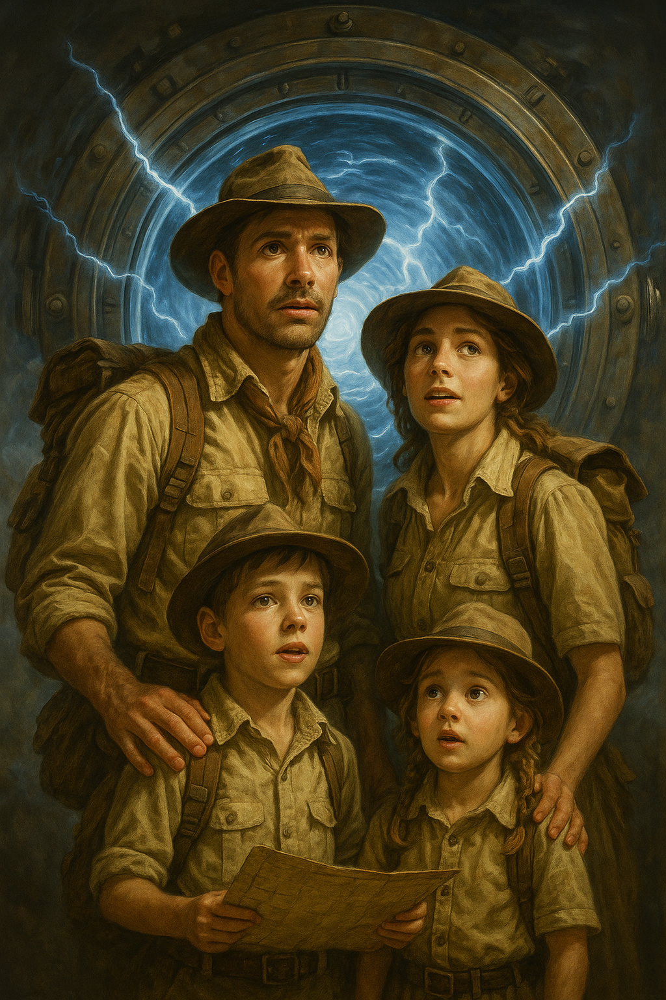

<!DOCTYPE html>
<html lang="es">
<head>
    <meta charset="UTF-8">
    <meta name="viewport" content="width=device-width, initial-scale=1.0">
    <title>Guía del Tiempo - Guardianes de San Juan</title>

    <script src="https://unpkg.com/react@18/umd/react.development.js"></script>
    <script src="https://unpkg.com/react-dom@18/umd/react-dom.development.js"></script>
    <script src="https://unpkg.com/@babel/standalone/babel.min.js"></script>

    <style>
        @import url('https://fonts.googleapis.com/css2?family=Teko:wght@400;500;600;700&family=Roboto:wght@400;700&display=swap');

        :root {
            --color-primary: #f39c12; --color-secondary: #e67e22; --color-background-dark: #121828;
            --color-background-medium: #161e31; --color-background-light: #1a243a; --color-text-primary-on-dark: #e0e0e0;
            --color-text-secondary-on-dark: #bdc3c7; --color-text-on-primary: #121828; --font-primary: 'Teko', sans-serif;
            --font-secondary: 'Roboto', sans-serif;
        }

        body {
            font-family: var(--font-secondary); background-color: var(--color-background-dark);
            background-image: url('https://www.transparenttextures.com/patterns/stardust.png'); color: var(--color-text-primary-on-dark);
            margin: 0; padding: 20px 0; display: flex; justify-content: center; align-items: flex-start; min-height: 100vh;
            box-sizing: border-box;
        }

        #root {
            width: 100%; max-width: 500px; background-color: var(--color-background-medium); border-radius: 15px;
            box-shadow: 0 10px 50px rgba(243,156,18, 0.35); overflow: hidden; border: 3px solid var(--color-primary);
        }

        .app-container { text-align: center; transition: opacity 0.5s ease-in-out; }
        .login-container { padding: 30px 25px; background: linear-gradient(145deg, var(--color-background-medium), var(--color-background-dark)); color: var(--color-text-primary-on-dark); }
        .login-container img.logo { width: 310px; margin-bottom: 10px; }
        .login-container h1 { font-family: var(--font-primary); font-size: 2.5rem; margin: 0 0 8px 0; color: var(--color-primary); line-height: 1.1; text-shadow: 1px 1px 3px rgba(0,0,0,0.5); }
        .login-container .lema { font-family: var(--font-secondary); font-size: 1.1rem; margin-bottom: 20px; color: var(--color-text-secondary-on-dark); }
        .login-container input { font-family: var(--font-secondary); width: calc(100% - 24px); padding: 12px; margin-top: 5px; border: 2px solid var(--color-primary); border-radius: 5px; background: var(--color-background-light); color: var(--color-text-primary-on-dark); font-size: 1.1rem; }
        .login-container input::placeholder { color: var(--color-text-secondary-on-dark); opacity: 0.7; }
        .login-container button { font-family: var(--font-primary); width: 100%; padding: 14px; margin-top: 20px; background-color: var(--color-primary); color: var(--color-text-on-primary); border: none; border-radius: 8px; font-size: 1.9rem; font-weight: 600; cursor: pointer; transition: transform 0.2s, background-color 0.3s, box-shadow 0.3s; box-shadow: 0 6px 20px rgba(0,0,0,0.3); }
        .login-container button:hover { background-color: var(--color-secondary); color: white; transform: translateY(-2px) scale(1.02); box-shadow: 0 8px 25px rgba(0,0,0,0.4); }
        .login-container label { display: block; margin-top: 15px; margin-bottom: 5px; font-size: 0.95rem; color: var(--color-text-secondary-on-dark); text-align: left; }
        .header { background-color: var(--color-background-dark); color: var(--color-text-primary-on-dark); padding: 12px 20px; display: flex; justify-content: space-between; align-items: center; border-bottom: 3px solid var(--color-primary); }
        .header-info span, .header-score .score, .header-score .timer { font-family: var(--font-primary); font-size: 1.5rem; display: block; }
        .header-info .team-name { font-size: 1.8rem; color: var(--color-primary); font-weight: 600; }
        .header-info .team-title { font-size: 0.9rem; color: var(--color-text-secondary-on-dark); letter-spacing: 0.5px; }
        .header-score { text-align: right; }
        .header-score .score { color: var(--color-primary); font-weight: 500; }
        .header-score .timer { color: var(--color-text-primary-on-dark); }
        .dashboard-content { padding: 20px; min-height: 400px; display: flex; flex-direction: column; justify-content: flex-start; }
        .stage-container, .challenge-container, .end-container, .en-ruta-container { border: 2px solid var(--color-primary); border-radius: 10px; padding: 20px; background: var(--color-background-light); color: var(--color-text-primary-on-dark); box-shadow: 0 4px 20px rgba(0,0,0,0.3); animation: fadeIn 0.6s ease-in-out; margin-bottom: 20px; }
        @keyframes fadeIn { from { opacity: 0; transform: translateY(15px); } to { opacity: 1; transform: translateY(0); } }
        h3 { font-family: var(--font-primary); font-size: 2rem; margin-top: 0; margin-bottom: 15px; color: var(--color-primary); border-bottom: 2px solid var(--color-secondary); padding-bottom: 10px; line-height: 1.2; font-weight: 600; }
        .stage-container h3, .challenge-container h3 { font-size: 1.8rem; }
        p { font-size: 1rem; line-height: 1.6; color: var(--color-text-secondary-on-dark); margin-bottom: 15px; }
        strong { color: var(--color-text-primary-on-dark); font-weight: 700; }
        input:not(.login-container input) { font-family: var(--font-secondary); width: calc(100% - 24px); padding: 12px; font-size: 1.05rem; border: 1px solid var(--color-text-secondary-on-dark); border-radius: 5px; margin-top: 10px; background-color: var(--color-background-medium); color: var(--color-text-primary-on-dark); }
        input:not(.login-container input)::placeholder { color: var(--color-text-secondary-on-dark); opacity: 0.6; }
        .button-group { display: flex; flex-direction: column; gap: 10px; margin-top: 20px; }
        @media (min-width: 400px) { .button-group { flex-direction: row; } }
        .primary-button, .secondary-button { font-family: var(--font-primary); width: 100%; padding: 12px; border-radius: 8px; font-size: 1.7rem; font-weight: 600; cursor: pointer; transition: transform 0.2s, background-color 0.3s, box-shadow 0.3s; box-shadow: 0 4px 15px rgba(0,0,0,0.2); border: 2px solid transparent; }
        .primary-button:disabled, .secondary-button:disabled { background-color: #56595d; cursor: not-allowed; color: #909397; box-shadow: none; transform: none; border-color: #56595d; }
        .primary-button { background-color: var(--color-primary); color: var(--color-text-on-primary); border-color: var(--color-primary); }
        .primary-button:hover:not(:disabled) { background-color: var(--color-secondary); border-color: var(--color-secondary); color: white; transform: translateY(-2px) scale(1.02); box-shadow: 0 6px 20px rgba(0,0,0,0.3); }
        .secondary-button { background-color: transparent; color: var(--color-primary); border-color: var(--color-primary); }
        .secondary-button:hover:not(:disabled) { background-color: var(--color-primary); color: var(--color-text-on-primary); transform: translateY(-2px); }
        .feedback { margin-top: 15px; font-size: 1.1rem; font-weight: bold; }
        .feedback.success { color: #27ae60; }
        .feedback.error { color: #e74c3c; }
        .en-ruta-container .primary-button, .challenge-container .primary-button { margin-top: 20px; }
        .transmission-box { background-color: rgba(243,156,18, 0.07); border-left: 4px solid var(--color-primary); padding: 12px 18px; margin: 20px 0; border-radius: 4px; }
        .transmission-box p { margin: 5px 0; color: var(--color-text-secondary-on-dark); font-style: italic; }
        .transmission-box strong { color: var(--color-primary); font-style: normal; font-weight: 600; }
        .challenge-timer { font-family: var(--font-primary); font-size: 2.5rem; color: #e74c3c; margin: 10px 0 15px 0; animation: pulseTemporal 1.5s infinite; }
        @keyframes pulseTemporal { 0% { opacity: 0.7; transform: scale(1); } 50% { opacity: 1; transform: scale(1.03); } 100% { opacity: 0.7; transform: scale(1); } }
        .trivia-options { list-style: none; padding: 0; margin-top: 15px; }
        .trivia-options li { background: var(--color-background-medium); color: var(--color-text-primary-on-dark); margin: 10px 0; padding: 15px; border-radius: 8px; cursor: pointer; transition: all 0.2s ease-in-out; border: 2px solid var(--color-text-secondary-on-dark); font-size: 1rem; }
        .trivia-options li:hover { background: var(--color-background-light); transform: translateX(5px); border-color: var(--color-primary); }
        .trivia-options li.selected { background: var(--color-primary); color: var(--color-text-on-primary); border-color: var(--color-secondary); font-weight: bold; }
        .en-ruta-container, .end-container { text-align: center; }
        .en-ruta-container .portal-image { width: 100%; max-width: 220px; height: auto; border-radius: 8px; margin-bottom: 15px; opacity: 0.7; border: 2px solid var(--color-primary); }
        .end-container .medal-image { width: 100px; margin-bottom: 10px; }
        .dev-reset-button { position: fixed; bottom: 10px; right: 10px; background-color: #c0392b; color: white; padding: 8px 12px; border-radius: 5px; font-size: 0.9rem; font-family: var(--font-secondary); cursor: pointer; z-index: 2000; border: none; opacity: 0.8; transition: opacity 0.3s ease; }
        .dev-reset-button:hover { opacity: 1; }
    </style>
</head>
<body>
    <div id="root"></div>

    <script type="text/babel">
        // --- DATOS COMPLETOS DEL EVENTO ---
        const eventData = [
            // SANTA LUCÍA
            {
                id: 1, department: "Santa Lucía", location: "Parroquia Santa Lucía",
                anchor: { missionName: "Ancla: Vestigios del Sismo", enabler: "Consigna: Busquen el año del catastrófico terremoto que destruyó el 'hermoso templo colonial'.\nPista: Este evento marcó un antes y un después en la arquitectura de toda la provincia.", enablerKeyword: "1944", transmission: "Guardián, detecto una cicatriz profunda en la línea de tiempo de este lugar sagrado. Debes anclar el año del evento que lo cambió todo para estabilizarla." },
                trivia: { missionName: "Trivia: El Templo de 1900", challenge: { question: "¿En qué año fue inaugurado el templo de estilo ecléctico que reemplazó a la primera capilla?", options: ["1894", "1900", "1944", "1964"], correctAnswer: "1900" } },
                nextMissionId: 2
            },
            {
                id: 2, department: "Santa Lucía", location: "Parroquia Santa Lucía",
                anchor: { missionName: "Ancla: La Fe Reconstruida", enabler: "Consigna: Encuentren el año de inauguración de la iglesia moderna y actual.\nPista: Se inauguró durante las fiestas patronales de diciembre.", enablerKeyword: "1964", transmission: "La fe de un pueblo se manifiesta en su capacidad de renacer. Encuentra el año en que este templo moderno abrió sus puertas para sellar esta memoria." },
                trivia: { missionName: "Trivia: Fervor Popular", challenge: { question: "¿Qué importante evento religioso se celebra cada diciembre en la parroquia?", options: ["La Fiesta del Sol", "El aniversario del departamento", "La Fiesta Patronal de Santa Lucía", "La peregrinación a la Difunta Correa"], correctAnswer: "La Fiesta Patronal de Santa Lucía" } },
                nextMissionId: 3
            },
            {
                id: 3, department: "Santa Lucía", location: "Monumento La Luz del Mundo",
                anchor: { missionName: "Ancla: El Primer Destello", enabler: "Consigna: Identifiquen el año en que los primeros pobladores se reunían en esta zona.\nPista: El lugar era conocido históricamente como 'La Legua'.", enablerKeyword: "1869", transmission: "Detecto una débil señal de luz del pasado. Viaja al año de origen, cuando esta esquina se convirtió en un punto de encuentro vital para los pioneros." },
                trivia: { missionName: "Trivia: La Lámpara Primitiva", challenge: { question: "Según la tradición, ¿qué se utilizaba en el mangrullo para orientar a los viajeros antes de la lámpara de carburo?", options: ["Una fogata", "Una lámpara de aceite", "Antorchas", "Un farol eléctrico"], correctAnswer: "Una lámpara de aceite" } },
                nextMissionId: 4
            },
            {
                id: 4, department: "Santa Lucía", location: "Monumento La Luz del Mundo",
                anchor: { missionName: "Ancla: El Ojo del Pasado", enabler: "Consigna: ¿Qué tipo de institución de seguridad, con una torre 'bichadora', funcionó en esta esquina 'décadas atrás'?\nPista: Su función era velar por la seguridad de los viajeros.", enablerKeyword: "Un puesto policial", transmission: "La seguridad de los viajeros era crucial. En esta esquina existió una institución protectora. Ancla su nombre para recordar su labor." },
                trivia: { missionName: "Trivia: El Fin del Mundo Iluminado", challenge: { question: "¿Qué apodo le daban los antiguos pobladores al lugar donde se encendía la luz?", options: ["El faro de La Legua", "El portal de la ciudad", "Donde terminaba el mundo", "La esquina del viajero"], correctAnswer: "Donde terminaba el mundo" } },
                nextMissionId: 5
            },
            {
                id: 5, department: "Santa Lucía", location: "Puente de Hierro",
                anchor: { missionName: "Ancla: El Nacimiento del Gigante de Hierro", enabler: "Consigna: Encuentren el año de inauguración del puente, el más antiguo de su tipo en la provincia.\nPista: Su construcción fue una hazaña para cruzar el caudaloso río.", enablerKeyword: "1893", transmission: "Este gigante de metal fue una revolución. Anclar su año de nacimiento es vital para preservar la memoria del progreso." },
                trivia: { missionName: "Trivia: El Propósito Original", challenge: { question: "¿Para qué medio de transporte fue construido originalmente este puente?", options: ["Peatones y carretas", "Tráfico carretero", "Ferrocarril", "Animales de carga"], correctAnswer: "Ferrocarril" } },
                nextMissionId: 6
            },
            {
                id: 6, department: "Santa Lucía", location: "Puente de Hierro",
                anchor: { missionName: "Ancla: El Manto de la Historia", enabler: "Consigna: Busquen el año en que fue declarado Monumento Histórico Provincial.\nPista: Ocurrió después de la construcción de un puente nuevo y paralelo en 2012.", enablerKeyword: "2021", transmission: "El tiempo no pudo con él, y la ley lo protegió para siempre. Encuentra el año en que se reconoció su valor histórico." },
                trivia: { missionName: "Trivia: La Medida del Coloso", challenge: { question: "¿Qué longitud tiene este histórico puente de un solo carril?", options: ["150 metros", "200 metros", "244 metros", "300 metros"], correctAnswer: "244 metros" } },
                nextMissionId: 7
            },
            {
                id: 7, department: "Santa Lucía", location: "Plaza General San Martín",
                anchor: { missionName: "Ancla: El Corazón del Pueblo", enabler: "Consigna: ¿En qué siglo se remonta la existencia de esta plaza, corazón del departamento?\nPista: Ha sido el centro de la vida comunitaria desde la creación del pueblo.", enablerKeyword: "Siglo XIX", transmission: "Todo pueblo tiene un corazón que late al ritmo de su gente. Viaja al siglo en que este corazón comenzó a latir." },
                trivia: { missionName: "Trivia: El Tesoro de la Infancia", challenge: { question: "¿Qué elemento histórico se puso en valor durante la remodelación de la plaza?", options: ["La fuente central", "El mástil principal", "La calesita", "El reloj de sol"], correctAnswer: "La calesita" } },
                nextMissionId: 8
            },
            {
                id: 8, department: "Santa Lucía", location: "Plaza General San Martín",
                anchor: { missionName: "Ancla: La Renovación del Encuentro", enabler: "Consigna: Hallen el año en que la plaza fue totalmente remodelada, con motivo del 152° aniversario.\nPista: Se agregó Wi-Fi público y se descubrió una placa conmemorativa.", enablerKeyword: "2021", transmission: "Los espacios evolucionan para seguir uniendo a las personas. Ancla el año de la gran transformación de este punto de encuentro." },
                trivia: { missionName: "Trivia: Tradición Decembrina", challenge: { question: "¿Qué importante evento anual, que dura tres noches, se celebra en esta plaza cada diciembre?", options: ["El Festival del Sol", "El Aniversario de Santa Lucía", "La Fiesta Nacional de Santa Lucía", "La Feria de las Colectividades"], correctAnswer: "La Fiesta Nacional de Santa Lucía" } },
                nextMissionId: 9
            },
            // CAPITAL
            {
                id: 9, department: "Capital", location: "Plaza 25 de Mayo",
                anchor: { missionName: "Ancla: La Primera Piedra", enabler: "Consigna: ¿En qué año se fundó San Juan de la Frontera, momento en que se reservó por primera vez el terreno para esta plaza?\nPista: Fue antes de que una inundación obligara a trasladar la ciudad.", enablerKeyword: "1562", transmission: "Toda gran ciudad tiene un punto de origen. Viaja al año fundacional para anclar el primer latido de San Juan." },
                trivia: { missionName: "Trivia: El Bautismo de la Plaza", challenge: { question: "¿Qué ilustre sanjuanino propuso cambiar el nombre de 'Plaza de Armas' a '25 de Mayo'?", options: ["Francisco Narciso de Laprida", "Guillermo Rawson", "Agustín Gnecco", "Domingo F. Sarmiento"], correctAnswer: "Domingo F. Sarmiento" } },
                nextMissionId: 10
            },
            {
                id: 10, department: "Capital", location: "Plaza 25 de Mayo",
                anchor: { missionName: "Ancla: El Renacer de las Aguas", enabler: "Consigna: Descubran el año en que la ciudad y la plaza fueron trasladadas a su ubicación actual después de una gran inundación.\nPista: Ocurrió 31 años después de la fundación original.", enablerKeyword: "1593", transmission: "La naturaleza obligó a un nuevo comienzo. Fija en la línea de tiempo el año en que la ciudad renació de las aguas y se estableció en su lugar definitivo." },
                trivia: { missionName: "Trivia: Actividad Colonial", challenge: { question: "Además de leer bandos, ¿qué otra actividad pública se realizaba en la plaza durante la época colonial?", options: ["Justas de caballeros", "Corridas de toros", "Mercados de esclavos", "Obras de teatro"], correctAnswer: "Corridas de toros" } },
                nextMissionId: 11
            },
            {
                id: 11, department: "Capital", location: "Catedral de San Juan Bautista",
                anchor: { missionName: "Ancla: La Semilla de la Fe", enabler: "Consigna: Encuentren el año de fundación del templo original, que sirvió como Iglesia Mayor durante 232 años.\nPista: Fue elevado a catedral a inicios del siglo XIX.", enablerKeyword: "1712", transmission: "Mucho antes del moderno campanil, una orden religiosa sembró la primera semilla de fe en este solar. Ancla su año de fundación." },
                trivia: { missionName: "Trivia: Los Fundadores", challenge: { question: "¿Qué orden religiosa fundó la iglesia matriz original en este mismo solar?", options: ["Franciscanos", "Dominicos", "Agustinos", "Jesuitas"], correctAnswer: "Jesuitas" } },
                nextMissionId: 12
            },
            {
                id: 12, department: "Capital", location: "Catedral de San Juan Bautista",
                anchor: { missionName: "Ancla: La Inauguración Moderna", enabler: "Consigna: Busquen la fecha exacta de inauguración de la actual y moderna catedral.\nPista: Ocurrió 35 años después del devastador terremoto de 1944.", enablerKeyword: "16 de diciembre de 1979", transmission: "De las ruinas emergió un símbolo de resiliencia. La fecha exacta de su inauguración es un testamento al espíritu sanjuanino. ¡Encuéntrala!" },
                trivia: { missionName: "Trivia: El Ícono Urbano", challenge: { question: "¿Qué altura tiene el distintivo campanil de ladrillo rojo que se ha convertido en un ícono urbano?", options: ["44 metros", "51 metros", "62 metros", "79 metros"], correctAnswer: "51 metros" } },
                nextMissionId: 13
            },
            {
                id: 13, department: "Capital", location: "Convento de Santo Domingo",
                anchor: { missionName: "Ancla: La Estadía del General", enabler: "Consigna: ¿En qué año se hospedó el General San Martín en una modesta celda de este convento?\nPista: Lo hizo mientras organizaba la campaña libertadora y el Cruce de los Andes.", enablerKeyword: "1815", transmission: "Los muros de este convento fueron testigos de la planificación de la gesta más grande de América. Ancla el año en que el Libertador caminó por estos pasillos." },
                trivia: { missionName: "Trivia: Cuartel de Héroes", challenge: { question: "¿Qué división del Ejército de los Andes utilizó el convento como cuartel?", options: ["El Regimiento de Granaderos a Caballo", "La División Cabot", "La División del Sur", "La Artillería de Montaña"], correctAnswer: "La División Cabot" } },
                nextMissionId: 14
            },
            {
                id: 14, department: "Capital", location: "Convento de Santo Domingo",
                anchor: { missionName: "Ancla: El Sismo Devastador", enabler: "Consigna: Identifiquen el año del sismo que afectó gravemente al edificio original del convento.\nPista: A pesar de la destrucción, la celda de San Martín fue rescatada.", enablerKeyword: "1944", transmission: "Nuevamente, la tierra tembló y la historia se partió en dos. Fija el año de la gran ruptura para comprender la reconstrucción." },
                trivia: { missionName: "Trivia: El Sobreviviente de Piedra", challenge: { question: "¿Qué otra parte del convento original permaneció en pie tras el terremoto y fue restaurada?", options: ["El altar mayor", "La biblioteca", "El antiguo campanario dominico", "El portón principal"], correctAnswer: "El antiguo campanario dominico" } },
                nextMissionId: 15
            },
            {
                id: 15, department: "Capital", location: "Casa Natal de Sarmiento",
                anchor: { missionName: "Ancla: El Nacimiento del Prócer", enabler: "Consigna: Descubran el año en que nació en esta humilde vivienda el futuro presidente de la Nación.\nPista: Es conocido como el 'padre de la educación argentina'.", enablerKeyword: "1811", transmission: "En esta casa de adobe comenzó todo. Ancla el año de nacimiento del hombre que cambiaría la educación del país." },
                trivia: { missionName: "Trivia: La Higuera Histórica", challenge: { question: "¿Bajo la sombra de qué árbol hilaba doña Paula Albarracín mientras supervisaba la construcción de la casa?", options: ["Un algarrobo", "Una higuera", "Un olivo", "Un naranjo"], correctAnswer: "Una higuera" } },
                nextMissionId: 16
            },
            {
                id: 16, department: "Capital", location: "Casa Natal de Sarmiento",
                anchor: { missionName: "Ancla: El Primer Monumento Nacional", enabler: "Consigna: Determinen el año en que esta casa se convirtió en el Primer Monumento Histórico Nacional del país.\nPista: Ocurrió por ley del Congreso y un año después abrió sus puertas como museo.", enablerKeyword: "1910", transmission: "Esta humilde casa fue la primera en recibir el máximo honor. Fija el año en que la Nación la declaró su primer monumento histórico." },
                trivia: { missionName: "Trivia: Sede de Gobierno", challenge: { question: "¿Qué función tuvo la casa durante el gobierno provincial de Sarmiento?", options: ["Escuela de primeras letras", "Biblioteca Pública", "Casa de Gobierno", "Cuartel militar"], correctAnswer: "Casa de Gobierno" } },
                nextMissionId: 17
            },
            {
                id: 17, department: "Capital", location: "Escuela Normal Sarmiento",
                anchor: { missionName: "Ancla: La Fundación Pionera", enabler: "Consigna: ¿En qué año se fundó esta institución pionera en la formación de maestros?\nPista: Su fundación es anterior a la construcción de su imponente edificio actual.", enablerKeyword: "1879", transmission: "Antes del edificio, nació la idea. Ancla el año en que se fundó esta institución, un faro de la educación sarmientina." },
                trivia: { missionName: "Trivia: El Coloso Antisísmico", challenge: { question: "¿Cuál es la particularidad más destacada del edificio de esta escuela, que le permitió sobrevivir a dos grandes terremotos?", options: ["Fue construido con mármol importado.", "Fue el primer edificio antisísmico de la ciudad.", "Sus cimientos son de acero.", "Tiene muros de 2 metros de espesor."], correctAnswer: "Fue el primer edificio antisísmico de la ciudad." } },
                nextMissionId: 18
            },
            {
                id: 18, department: "Capital", location: "Escuela Normal Sarmiento",
                anchor: { missionName: "Ancla: Legado del Centenario", enabler: "Consigna: ¿Hacia qué año se inauguró el actual edificio, el único que queda en pie de la época del Centenario?\nPista: Fue edificado con técnicas reforzadas tras el terremoto de 1894.", enablerKeyword: "Hacia 1910", transmission: "Construido para durar y para celebrar a la patria. Encuentra la fecha aproximada en que este bastión educativo abrió sus puertas." },
                trivia: { missionName: "Trivia: Refugio del Estado", challenge: { question: "Gracias a su resistente estructura, ¿qué importante institución albergó provisoriamente la escuela justo después del sismo de 1944?", options: ["El Hospital Rawson", "La Universidad Nacional de Cuyo", "La Gobernación de la provincia", "La Catedral de San Juan"], correctAnswer: "La Gobernación de la provincia" } },
                nextMissionId: 19
            },
            {
                id: 19, department: "Capital", location: "Museo Franklin Rawson",
                anchor: { missionName: "Ancla: La Inauguración Original", enabler: "Consigna: Busquen el año de la inauguración original del museo.\nPista: Su sede fue destruida pocos años después por el sismo de 1944.", enablerKeyword: "1936", transmission: "El arte sanjuanino tuvo su primer hogar, aunque fue efímero. Ancla el año de su inauguración original." },
                trivia: { missionName: "Trivia: El Dúo Dinámico", challenge: { question: "Además de Franklin Rawson, ¿qué dos famosos hermanos impulsaron la gestación de la colección fundacional del museo?", options: ["Los hermanos Cabot", "Los hermanos Gnecco", "Domingo y Procesa Sarmiento", "Los hermanos Laprida"], correctAnswer: "Domingo y Procesa Sarmiento" } },
                nextMissionId: 20
            },
            {
                id: 20, department: "Capital", location: "Museo Franklin Rawson",
                anchor: { missionName: "Ancla: El Hogar Definitivo del Arte", enabler: "Consigna: Encuentren el año en que el museo finalmente abrió las puertas de su moderno y exclusivo edificio actual.\nPista: Ocurrió después de décadas de funcionar en instalaciones provisorias.", enablerKeyword: "2011", transmission: "Tras un largo peregrinaje, el arte sanjuanino encontró su templo definitivo. Fija el año en que se inauguró su espectacular sede moderna." },
                trivia: { missionName: "Trivia: Un Refugio de Emergencia", challenge: { question: "¿En qué lugar tuvo que funcionar el museo durante un tiempo, en condiciones de emergencia, después de que el terremoto destruyera su sede?", options: ["En la Casa Natal de Sarmiento", "En el sótano del Auditorio Juan Victoria", "En el Convento de Santo Domingo", "En la Escuela Normal Sarmiento"], correctAnswer: "En el sótano del Auditorio Juan Victoria" } },
                nextMissionId: 21
            },
            {
                id: 21, department: "Capital", location: "Museo Agustín Gnecco",
                anchor: { missionName: "Ancla: La Pasión del Coleccionista", enabler: "Consigna: ¿En qué año fue fundado formalmente este museo, considerado el más antiguo de la provincia?\nPista: Su creación fue impulsada por un apasionado coleccionista y erudito local.", enablerKeyword: "1911", transmission: "La pasión de un hombre por la historia dio origen al museo más antiguo de San Juan. Ancla el año de su fundación oficial." },
                trivia: { missionName: "Trivia: Criterio Innovador", challenge: { question: "¿Qué criterio innovador para su tiempo utilizó Agustín Gnecco para formar su colección?", options: ["Coleccionar solo objetos de oro y plata.", "Preservar objetos de la vida cotidiana del pueblo común.", "Reunir únicamente artefactos militares.", "Adquirir solo arte religioso."], correctAnswer: "Preservar objetos de la vida cotidiana del pueblo común." } },
                nextMissionId: 22
            },
            {
                id: 22, department: "Capital", location: "Museo Agustín Gnecco",
                anchor: { missionName: "Ancla: La Casona de las Escuelas", enabler: "Consigna: Hallen el año de construcción de la casona de estilo neoclásico italianizante que hoy es la sede del museo.\nPista: Fue declarada Monumento Histórico Arquitectónico Provincial en 2008.", enablerKeyword: "1926", transmission: "Este edificio no siempre albergó reliquias, antes fue un semillero de conocimiento. Fija el año en que se construyó esta histórica casona." },
                trivia: { missionName: "Trivia: El Propósito Original de la Sede", challenge: { question: "La casona que hoy alberga el museo fue construida originalmente para alojar...", options: ["La residencia de la familia Gnecco", "Oficinas de gobierno", "Escuelas", "Un hospital"], correctAnswer: "Escuelas" } },
                nextMissionId: 23
            },
            {
                id: 23, department: "Capital", location: "Auditorio Juan Victoria",
                anchor: { missionName: "Ancla: El Estreno de la Acústica", enabler: "Consigna: Identifiquen la fecha exacta de inauguración de este complejo, una obra única en Argentina en su momento.\nPista: Lleva el nombre del ingeniero que impulsó su construcción.", enablerKeyword: "21 de julio de 1970", transmission: "La música encontró su templo en San Juan. Ancla la fecha exacta en que este ícono cultural abrió sus puertas por primera vez." },
                trivia: { missionName: "Trivia: El Sonido Perfecto", challenge: { question: "¿Qué característica del diseño de la sala de conciertos garantiza una calidad de sonido impecable desde cualquier punto?", options: ["Asientos de terciopelo", "Una cúpula de cristal", "Paneles de madera y relieves en las paredes", "Su forma perfectamente circular"], correctAnswer: "Paneles de madera y relieves en las paredes" } },
                nextMissionId: 24
            },
            {
                id: 24, department: "Capital", location: "Auditorio Juan Victoria",
                anchor: { missionName: "Ancla: La Década Dorada", enabler: "Consigna: ¿De qué década es el estilo arquitectónico funcional y estético de este ícono cultural?\nPista: Se ha mantenido como un referente por más de 50 años.", enablerKeyword: "Años '70", transmission: "Su diseño audaz y su acústica perfecta son un reflejo de su época. Fija la década que lo vio nacer." },
                trivia: { missionName: "Trivia: El Gigante Musical", challenge: { question: "¿Qué imponente instrumento musical, apto para grandes conciertos, se encuentra en la sala principal?", options: ["Un piano de cola imperial", "Un clavicordio del siglo XVIII", "Un órgano de tubos", "Un arpa de concierto"], correctAnswer: "Un órgano de tubos" } },
                nextMissionId: 25
            },
            {
                id: 25, department: "Capital", location: "Teatro del Bicentenario",
                anchor: { missionName: "Ancla: El Silbato del Pasado", enabler: "Consigna: ¿En qué año se inauguró el ferrocarril cuya histórica estación se encontraba en el predio del teatro?\nPista: El teatro conserva la memoria de este histórico medio de transporte.", enablerKeyword: "1885", transmission: "Antes del aplauso, se escuchaba el silbato del tren. Ancla el año en que el ferrocarril llegó a este histórico predio." },
                trivia: { missionName: "Trivia: Gala Inaugural", challenge: { question: "¿Qué ópera se presentó en la gala inaugural del teatro, con la participación de la compañía española La Fura dels Baus?", options: ["Aida", "La Traviata", "El Barbero de Sevilla", "Carmina Burana"], correctAnswer: "Carmina Burana" } },
                nextMissionId: 26
            },
            {
                id: 26, department: "Capital", location: "Teatro del Bicentenario",
                anchor: { missionName: "Ancla: Nace un Coloso", enabler: "Consigna: ¿En qué fecha fue inaugurado este moderno centro de artes escénicas?\nPista: Su apertura fue parte de las celebraciones del Bicentenario de la patria.", enablerKeyword: "21 de octubre de 2016", transmission: "Un nuevo gigante cultural nació para celebrar a la patria. Fija la fecha exacta de su inauguración." },
                trivia: { missionName: "Trivia: Diseño de Vanguardia", challenge: { question: "¿Qué elemento arquitectónico destaca en el exterior del teatro, combinando tradición y vanguardia?", options: ["Un techo de tejas coloniales", "Un gran arco de triunfo", "Fachadas de vidrio y un espejo de agua frontal", "Columnas de estilo griego"], correctAnswer: "Fachadas de vidrio y un espejo de agua frontal" } },
                nextMissionId: 27
            },
             // RIVADAVIA
            {
                id: 27, department: "Rivadavia", location: "Jardín de los Poetas",
                anchor: { missionName: "Ancla: El Edén Literario", enabler: "Consigna: Busquen la fecha de inauguración de este parque poético.\nPista: Fue concebido por la visionaria Ofelia Zúccoli Fidanza.", enablerKeyword: "11 de abril de 1958", transmission: "Donde la poesía y la naturaleza se unen. Ancla la fecha en que este jardín abrió sus puertas al público." },
                trivia: { missionName: "Trivia: Símbolo Vegetal", challenge: { question: "¿Qué figura patriótica está representada en la ladera de la sierra utilizando flores, arbustos y árboles?", options: ["La Bandera Argentina", "El Escudo Nacional", "El rostro de San Martín", "El mapa de Argentina"], correctAnswer: "El Escudo Nacional" } },
                nextMissionId: 28
            },
            {
                id: 28, department: "Rivadavia", location: "Jardín de los Poetas",
                anchor: { missionName: "Ancla: El Parque Original", enabler: "Consigna: ¿Cómo se conocía antiguamente el gran espacio verde del que forma parte este jardín?\nPista: Hoy se lo conoce como Parque Provincial Rivadavia.", enablerKeyword: "Parque Bernardino Rivadavia", transmission: "Antes de ser el parque provincial, este gran pulmón verde tenía otro nombre. Ancla su denominación original." },
                trivia: { missionName: "Trivia: Homenaje en Piedra", challenge: { question: "¿A quiénes están dedicados los bustos y esculturas que se encuentran entre los senderos del jardín?", options: ["A los héroes de la independencia", "A los gobernadores de San Juan", "A los grandes poetas argentinos", "A los científicos más destacados"], correctAnswer: "A los grandes poetas argentinos" } },
                nextMissionId: 29
            },
            {
                id: 29, department: "Rivadavia", location: "Monumento a la Virgen del Líbano",
                anchor: { missionName: "Ancla: La Época de la Fe", enabler: "Consigna: ¿A finales de qué década se instaló esta imagen en las peñas de la Sierra Chica de Zonda?\nPista: Desde entonces se ha convertido en un símbolo espiritual de Rivadavia.", enablerKeyword: "Década de 1980", transmission: "Una comunidad unida por la fe donó este símbolo de protección. Ancla la década en que fue erigida en lo alto de la sierra." },
                trivia: { missionName: "Trivia: El Origen de la Estatua", challenge: { question: "¿Qué comunidad donó la monumental estatua de 6 metros de altura?", options: ["La comunidad italiana", "La comunidad de origen libanés", "La comunidad española", "La comunidad Huarpe"], correctAnswer: "La comunidad de origen libanés" } },
                nextMissionId: 30
            },
            {
                id: 30, department: "Rivadavia", location: "Monumento a la Virgen del Líbano",
                anchor: { missionName: "Ancla: El Otro Hito Mariano", enabler: "Consigna: ¿Qué otra devoción, venerada en el distrito La Bebida, constituye junto a la Virgen del Líbano uno de los hitos marianos más importantes del departamento?\nPista: Es otra advocación de la Virgen muy arraigada en Rivadavia.", enablerKeyword: "La Virgen de Andacollo", transmission: "La fe de Rivadavia tiene dos grandes protectoras. Ancla el nombre de la otra Virgen venerada en el departamento." },
                trivia: { missionName: "Trivia: Legado Cultural", challenge: { question: "Además de su valor devocional, ¿qué testimonia y embellece este monumento?", options: ["La riqueza minera de la zona", "El aporte cultural de los inmigrantes de Medio Oriente", "La historia del ferrocarril", "La fundación del departamento"], correctAnswer: "El aporte cultural de los inmigrantes de Medio Oriente" } },
                nextMissionId: 31
            },
            {
                id: 31, department: "Rivadavia", location: "Autódromo El Zonda",
                anchor: { missionName: "Ancla: Templo de la Velocidad", enabler: "Consigna: Hallen la fecha exacta de inauguración de este circuito, considerado un 'templo del automovilismo cuyano'.\nPista: Lleva el nombre de un célebre piloto sanjuanino.", enablerKeyword: "8 de octubre de 1967", transmission: "El rugir de los motores resonó por primera vez en la quebrada. Ancla la fecha exacta de su inauguración." },
                trivia: { missionName: "Trivia: Tribunas Naturales", challenge: { question: "¿Qué característica única, aprovechando la geografía, ofrece este circuito al público para ver las carreras?", options: ["Una torre giratoria central", "Palcos de vidrio climatizados", "Tribunas naturales en las laderas de los cerros", "Túneles de observación subterráneos"], correctAnswer: "Tribunas naturales en las laderas de los cerros" } },
                nextMissionId: 32
            },
            {
                id: 32, department: "Rivadavia", location: "Autódromo El Zonda",
                anchor: { missionName: "Ancla: La Categoría Reina", enabler: "Consigna: ¿Qué famosa categoría del automovilismo nacional ha tenido competencias memorables en este circuito a lo largo de su historia?\nPista: Es una de las más populares y antiguas de Argentina.", enablerKeyword: "Turismo Carretera", transmission: "Los ídolos más grandes del automovilismo argentino han derrapado en estas curvas. Ancla el nombre de la categoría más emblemática que ha corrido aquí." },
                trivia: { missionName: "Trivia: La Medida del Desafío", challenge: { question: "¿Qué longitud tiene el desafiante trazado de montaña de este circuito?", options: ["1.800 metros", "2.300 metros", "2.800 metros", "3.200 metros"], correctAnswer: "2.300 metros" } },
                nextMissionId: 33
            },
            {
                id: 33, department: "Rivadavia", location: "Cavas de Zonda",
                anchor: { missionName: "Ancla: Origen Minero", enabler: "Consigna: ¿En qué período de tiempo fue fundada esta champañera, aprovechando una antigua mina?\nPista: Hoy es parte de la Ruta del Vino sanjuanina.", enablerKeyword: "A mediados del siglo XX", transmission: "Antes de albergar vinos espumosos, estas galerías tenían otro propósito. Ancla el período de su fundación como bodega." },
                trivia: { missionName: "Trivia: El Método Francés", challenge: { question: "¿Qué métodos franceses se utilizan de forma totalmente artesanal para producir champaña en esta cava?", options: ["Charmat y Prosecco", "Champenoise y Charmat", "Champenoise y Asti", "Maloláctico y Charmat"], correctAnswer: "Champenoise y Charmat" } },
                nextMissionId: 34
            },
            {
                id: 34, department: "Rivadavia", location: "Cavas de Zonda",
                anchor: { missionName: "Ancla: El Secreto de las Burbujas", enabler: "Consigna: ¿Qué se puede observar en las galerías subterráneas donde reposan miles de botellas?\nPista: Es una estructura de madera clave en el método Champenoise.", enablerKeyword: "Pupitres de madera", transmission: "El secreto de las burbujas perfectas descansa en la oscuridad. Ancla el nombre de las estructuras que sostienen las botellas durante su maduración." },
                trivia: { missionName: "Trivia: La Temperatura Ideal", challenge: { question: "¿Cuál es la temperatura constante que se mantiene de forma natural dentro de la cava, ideal para la fermentación?", options: ["12°C", "15°C", "18°C", "22°C"], correctAnswer: "18°C" } },
                nextMissionId: 35
            },
            {
                id: 35, department: "Rivadavia", location: "Parque Faunístico y El Pinar",
                anchor: { missionName: "Ancla: La Razón del Nombre", enabler: "Consigna: ¿Por qué motivo el camping municipal se llama 'El Pinar'?\nPista: Estos árboles ofrecen un reparo valioso en la aridez cuyana.", enablerKeyword: "Por los bosquecillos de pinos", transmission: "El nombre de este lugar de esparcimiento proviene de la flora que lo caracteriza. Ancla la razón de su nombre." },
                trivia: { missionName: "Trivia: Diversión de Verano", challenge: { question: "¿Qué atractivo acuático, apoyado en la pendiente natural, es muy popular en el balneario de 'El Pinar' durante el verano?", options: ["Una piscina de olas", "Un tobogán acuático", "Trampolines de salto", "Un río artificial lento"], correctAnswer: "Un tobogán acuático" } },
                nextMissionId: 36
            },
            {
                id: 36, department: "Rivadavia", location: "Parque Faunístico y El Pinar",
                anchor: { missionName: "Ancla: Capacidad de Acampe", enabler: "Consigna: ¿Cuál es la capacidad de acampe del Camping 'El Pinar'?\nPista: El lugar ofrece parcelas con parrilleros, mesas y sanitarios.", enablerKeyword: "Hasta 250 sitios", transmission: "Este camping es un refugio para muchos aventureros. Ancla la cantidad de sitios disponibles para acampar." },
                trivia: { missionName: "Trivia: Huéspedes Exóticos", challenge: { question: "Además de fauna autóctona como llamas y pumas, ¿qué tipo de animales rescatados se pueden encontrar en el Parque Faunístico?", options: ["Osos polares", "Tigres de bengala", "Leones africanos y monos", "Pingüinos"], correctAnswer: "Leones africanos y monos" } },
                nextMissionId: 37
            },
            {
                id: 37, department: "Rivadavia", location: "Centro Ambiental Anchipurac",
                anchor: { missionName: "Ancla: De Desecho a Tesoro", enabler: "Consigna: ¿Qué funcionaba en el predio de Anchipurac hasta la década de 1990?\nPista: Fue un gran pasivo ambiental para la provincia.", enablerKeyword: "El mayor basural a cielo abierto de la provincia", transmission: "Este lugar es el máximo símbolo de transformación. Ancla lo que fue antes de convertirse en un modelo de sustentabilidad." },
                trivia: { missionName: "Trivia: El Significado del Rayo", challenge: { question: "¿Qué significa la palabra de origen huarpe 'Anchipurac'?", options: ["Tierra Limpia", "Agua Pura", "Montaña Sagrada", "Rayo"], correctAnswer: "Rayo" } },
                nextMissionId: 38
            },
            {
                id: 38, department: "Rivadavia", location: "Centro Ambiental Anchipurac",
                anchor: { missionName: "Ancla: El Año del Cambio", enabler: "Consigna: Encuentren el año de inauguración del moderno edificio de Anchipurac.\nPista: Su nombre simboliza energía y renovación.", enablerKeyword: "2018", transmission: "La conciencia ambiental se materializó en este edificio. Ancla el año en que se inauguró este faro de esperanza para el planeta." },
                trivia: { missionName: "Trivia: Energía Limpia", challenge: { question: "¿Qué se puede encontrar en el exterior del complejo, además de senderos interpretativos y miradores?", options: ["Un vivero de plantas nativas", "Un parque solar con paneles fotovoltaicos", "Un lago artificial", "Una granja educativa"], correctAnswer: "Un parque solar con paneles fotovoltaicos" } },
                nextMissionId: 39
            },
            {
                id: 39, type: 'final', department: "Rivadavia Ancestral", location: "Parque de Rivadavia (Punto de Llegada)",
                missionName: "Misión: Sellar la Brecha Temporal",
                enabler: "¡Guardián, has llegado al nexo! El 'Ancla Temporal Final' para estabilizar la línea del tiempo de San Juan te será revelada por el Guardián Mayor al completar tu informe en la 'Guía del Tiempo'. Ingresa la palabra 'LEGADO' para confirmar la restauración.",
                enablerKeyword: "LEGADO",
                transmission: "Mensaje Urgente del Guardián Mayor: '¡Lo lograron! La Amenaza del Olvido retrocede gracias a su valor. Ingresen el Ancla Final. ¡El legado de San Juan está a salvo!'",
                nextMissionId: null
            }
        ];

        // --- CÓDIGOS DE ESCUADRÓN VÁLIDOS ---
        const validSquadCodes = {
            "GUARDIAN01": "Los CronoExploradores",
            "TIEMPOXYZ": "Vigías del Pasado",
            "SANJUAN2025": "Escuadrón Reliquia",
            "ASVTEST": "Equipo ASV Beta"
        };

        // --- COMPONENTES DE REACT ---
        const Header = ({ teamName, score, timer }) => {
            const formatTime = (totalSeconds) => {
                const hours = String(Math.floor(totalSeconds / 3600)).padStart(2, '0');
                const minutes = String(Math.floor((totalSeconds % 3600) / 60)).padStart(2, '0');
                const seconds = String(totalSeconds % 60).padStart(2, '0');
                return `${hours}:${minutes}:${seconds}`;
            };
            return (
                <div className="header">
                    <div className="header-info">
                        <span className="team-name">{teamName || "Escuadrón Desconocido"}</span>
                        <span className="team-title">GUARDIANES DEL TIEMPO</span>
                    </div>
                    <div className="header-score">
                        <span className="score">{score} FRAGMENTOS</span>
                        <span className="timer">⏳ {formatTime(timer)}</span>
                    </div>
                </div>
            );
        };

        const LoginPage = ({ onLogin, setErrorMessage, errorMessage }) => {
            const [squadCode, setSquadCode] = React.useState('');
            const logoUrl = "imagenes/LOGO 3 (1).png";
            const handleLoginInternal = () => {
                const normalizedCode = squadCode.toUpperCase().trim();
                if (validSquadCodes[normalizedCode]) {
                    onLogin(normalizedCode, validSquadCodes[normalizedCode]);
                    if (typeof setErrorMessage === 'function') setErrorMessage('');
                } else {
                    if (typeof setErrorMessage === 'function') setErrorMessage('⚠️ Código de Escuadrón no válido. ¡El tiempo se agota!');
                }
            };
            return (
                <div className="login-container">
                     { e.target.onerror = null; e.target.src="https://i.imgur.com/ZKiX1mO.png"; }} />
                    <h1>RUTA DEL TESORO:<br/>GUARDIANES DEL TIEMPO</h1>
                    <p className="lema">"¡El legado de San Juan te necesita! ¿Aceptas la misión?"</p>
                    <label htmlFor="squadCode">Código de Escuadrón:</label>
                    <input id="squadCode" type="text" placeholder="Ingresa tu código secreto" value={squadCode} onChange={(e) => setSquadCode(e.target.value)} onKeyPress={(e) => e.key === 'Enter' && handleLoginInternal()} />
                    <button className="primary-button" onClick={handleLoginInternal}>ACTIVAR GUÍA DEL TIEMPO</button>
                    {errorMessage && <p className="feedback error" style={{ marginTop: '15px' }}>{errorMessage}</p>}
                </div>
            );
        };
        
        const EnRutaPage = ({ nextLocation, onArrival, department }) => {
             return(
                 <div className="en-ruta-container">
                      { e.target.onerror = null; e.target.src='https://images.unsplash.com/photo-1520034475321-cbe63696469a?q=80&w=800&auto=format&fit=crop'; }} />
                     <h3>VIAJANDO A TRAVÉS DEL TIEMPO...</h3>
                     <p>Próxima Sincronización: <strong>{nextLocation}</strong></p>
                     <p>Departamento: <strong>{department}</strong></p>
                     <p>¡Mantén el rumbo, Guardián! Evita las 'distorsiones temporales' (¡y las multas de tránsito!).</p>
                     <button className="primary-button" onClick={onArrival}>LLEGADA CONFIRMADA</button>
                 </div>
             );
         };

        const EndGamePage = ({ score, finalTime, teamName }) => {
           return (
               <div className="end-container">
                   
                   <h3>¡MISIÓN TEMPORAL COMPLETADA, {teamName}!</h3>
                   <p>Has estabilizado la línea del tiempo de San Juan. ¡La 'Amenaza del Olvido' ha sido contenida gracias a tu escuadrón!</p>
                   <p><strong>Fragmentos de Historia Restaurados: {score}</strong></p>
                   <p><strong>Tiempo Total de la Misión: {finalTime}</strong></p>
                   <p>¡Has ganado tu Medalla "Guardián del Tiempo"! 🏅 Los "Custodios Mayores" y otros reconocimientos serán anunciados en el Concilio de Guardianes.</p>
                   <p style={{fontSize: "0.9rem", marginTop: "20px"}}><em>No olvides compartir tu hazaña y prepararte para la celebración.</em></p>
               </div>
           );
        };

        const TriviaSection = ({ stage, onComplete }) => {
            const { challenge, missionName } = stage.trivia;
            const [selectedOption, setSelectedOption] = React.useState('');
            const [feedback, setFeedback] = React.useState({ message: '', type: ''});
            const [triviaTimer, setTriviaTimer] = React.useState(0);

            React.useEffect(() => {
                const interval = setInterval(() => setTriviaTimer(prev => prev + 1), 1000);
                return () => clearInterval(interval);
            }, []);

            const calculatePoints = (timeInSeconds) => {
                if (timeInSeconds <= 30) return 50;
                if (timeInSeconds <= 60) return 35;
                if (timeInSeconds <= 90) return 20;
                return 10;
            };

            const handleSubmit = () => {
                const finalTime = triviaTimer;
                const isCorrect = selectedOption.toUpperCase() === challenge.correctAnswer.toUpperCase();
                const pointsWon = isCorrect ? calculatePoints(finalTime) : 0;

                setFeedback({
                    message: isCorrect ? `✔️ ¡Respuesta Correcta! Has recuperado ${pointsWon} Fragmentos.` : `❌ Respuesta Incorrecta. No se han recuperado Fragmentos.`,
                    type: isCorrect ? 'success' : 'error'
                });
                
                setTimeout(() => {
                    onComplete(pointsWon);
                }, 2500);
            };

            return (
                <div className="challenge-container">
                    <h3>{missionName}</h3>
                    <div className="challenge-timer">⏱️ {triviaTimer}s</div>
                    <p>{challenge.question}</p>
                    <ul className="trivia-options">
                        {challenge.options.map(option => (
                            <li key={option} className={selectedOption === option ? 'selected' : ''} onClick={() => !feedback.message && setSelectedOption(option)}>
                                {option}
                            </li>
                        ))}
                    </ul>
                    <button className="primary-button" onClick={handleSubmit} disabled={!selectedOption || feedback.message}>VERIFICAR TRANSMISIÓN</button>
                    {feedback.message && <p className={`feedback ${feedback.type}`}>{feedback.message}</p>}
                </div>
            );
        };

        const AnchorSection = ({ stage, onComplete }) => {
            const { anchor } = stage;
            const [keyword, setKeyword] = React.useState('');
            const [error, setError] = React.useState('');
            const [anchorTimer, setAnchorTimer] = React.useState(0);
            const [isLocked, setIsLocked] = React.useState(false);
            const [feedback, setFeedback] = React.useState({ message: '', type: ''});

            React.useEffect(() => {
                const interval = setInterval(() => {
                    if (!isLocked) setAnchorTimer(prev => prev + 1);
                }, 1000);
                return () => clearInterval(interval);
            }, [isLocked]);

            const calculateAnchorPoints = (timeInSeconds) => {
                if (timeInSeconds <= 60) return 100;
                if (timeInSeconds <= 120) return 80;
                if (timeInSeconds <= 180) return 60;
                if (timeInSeconds <= 240) return 40;
                if (timeInSeconds <= 300) return 20;
                return 0;
            };

            const handleUnlockInternal = () => {
                if (keyword.toUpperCase().trim() === anchor.enablerKeyword.toUpperCase().trim()) {
                    setIsLocked(true);
                    const points = calculateAnchorPoints(anchorTimer);
                    setError('');
                    setFeedback({ message: `✔️ ¡Ancla estabilizada! Has recuperado ${points} Fragmentos.`, type: 'success' });
                    setTimeout(() => onComplete(points), 2500);
                } else {
                    setError('🚫 Ancla Temporal incorrecta. ¡La distorsión persiste!');
                }
            };
            
            const handleSkip = () => {
                setIsLocked(true);
                setError('');
                setFeedback({ message: `Misión de anclaje omitida. No se han recuperado Fragmentos.`, type: 'error' });
                setTimeout(() => onComplete(0), 2500);
            };

            return (
                <div className="stage-container">
                    <h3>{anchor.missionName}</h3>
                    <div className="challenge-timer">⏱️ {anchorTimer}s</div>
                    <p><strong>Departamento:</strong> {stage.department}</p>
                    {anchor.transmission && <div className="transmission-box"><p><strong>📡 Transmisión Interceptada:</strong> {anchor.transmission}</p></div>}
                    <p><strong>Objetivo de la Coordenada:</strong> {anchor.enabler}</p>
                    <input type="text" placeholder="Ingresa el 'Ancla Temporal'" value={keyword} onChange={(e) => setKeyword(e.target.value)} onKeyPress={(e) => e.key === 'Enter' && handleUnlockInternal()}/>
                    <div className="button-group">
                        <button className="secondary-button" onClick={handleSkip} disabled={isLocked}>No sé</button>
                        <button className="primary-button" onClick={handleUnlockInternal} disabled={isLocked}>🗝️ ANCLAR RECUERDO</button>
                    </div>
                    {error && <p className="feedback error">{error}</p>}
                    {feedback.message && <p className={`feedback ${feedback.type}`}>{feedback.message}</p>}
                </div>
            );
        };
        
        const FinalSection = ({stage, onComplete}) => {
             const [keyword, setKeyword] = React.useState('');
             const [error, setError] = React.useState('');
             
             const handleUnlockInternal = () => {
                if (keyword.toUpperCase().trim() === stage.enablerKeyword.toUpperCase().trim()) {
                    onComplete(200); // Bonus por finalizar
                } else {
                    setError('🚫 Código final incorrecto.');
                }
            };
            
            return (
                 <div className="stage-container">
                    <h3>{stage.missionName}</h3>
                    {stage.transmission && <div className="transmission-box"><p><strong>📡 Transmisión Prioritaria:</strong> {stage.transmission}</p></div>}
                    <p><strong>Misión de Sellado:</strong> {stage.enabler}</p>
                    <input type="text" placeholder="Ingresa el Ancla Temporal Final" value={keyword} onChange={(e) => setKeyword(e.target.value)} onKeyPress={(e) => e.key === 'Enter' && handleUnlockInternal()}/>
                    <div className="button-group">
                         <button className="primary-button" onClick={handleUnlockInternal}>✨ SELLAR BRECHA TEMPORAL ✨</button>
                    </div>
                    {error && <p className="feedback error">{error}</p>}
                </div>
            );
        }

        const App = () => {
            const [appState, setAppState] = React.useState(() => {
                const savedState = localStorage.getItem('guardianesAppState');
                try {
                    const parsedState = savedState ? JSON.parse(savedState) : null;
                    if (parsedState && typeof parsedState.status === 'string' && parsedState.status !== 'login') {
                        return parsedState;
                    }
                } catch (e) {
                    console.error("Error al parsear localStorage, usando estado inicial.", e);
                    localStorage.removeItem('guardianesAppState');
                }
                return {
                    status: 'login',
                    squadCode: null,
                    teamName: '',
                    currentMissionId: eventData.length > 0 ? eventData[0].id : 1,
                    subStage: 'anchor',
                    score: 0,
                    mainTimer: 0,
                    finalTimeDisplay: ''
                };
            });

            React.useEffect(() => {
                localStorage.setItem('guardianesAppState', JSON.stringify(appState));
            }, [appState]);

            React.useEffect(() => {
                let interval;
                if (appState.status !== 'login' && appState.status !== 'finished') {
                    interval = setInterval(() => {
                        setAppState(prev => ({ ...prev, mainTimer: prev.mainTimer + 1 }));
                    }, 1000);
                }
                return () => clearInterval(interval);
            }, [appState.status]);

            const currentStageData = eventData.find(m => m.id === appState.currentMissionId);

            const handleLogin = (code, name) => {
                setAppState({
                    status: 'in_game',
                    squadCode: code,
                    teamName: name,
                    currentMissionId: eventData.length > 0 ? eventData[0].id : 1,
                    subStage: 'anchor',
                    score: 0,
                    mainTimer: 0,
                    finalTimeDisplay: '',
                    errorMessage: ''
                });
            };
            
            const handleAnchorComplete = (pointsEarned) => {
                if (!currentStageData) return;
                const newScore = appState.score + pointsEarned;
                setAppState(prev => ({ ...prev, score: newScore, subStage: 'trivia' }));
            };
            
            const handleTriviaComplete = (pointsEarned) => {
                if (!currentStageData) return;
                const newScore = appState.score + pointsEarned;
                if (typeof currentStageData.nextMissionId === 'number') {
                    setAppState(prev => ({ ...prev, score: newScore, status: 'on_the_road' }));
                } else {
                    handleFinalComplete(newScore);
                }
            };

            const handleFinalComplete = (currentScore) => {
                const totalSeconds = appState.mainTimer;
                const hours = String(Math.floor(totalSeconds / 3600)).padStart(2, '0');
                const minutes = String(Math.floor((totalSeconds % 3600) / 60)).padStart(2, '0');
                const seconds = String(totalSeconds % 60).padStart(2, '0');
                setAppState(prev => ({ ...prev, score: currentScore, status: 'finished', finalTimeDisplay: `${hours}:${minutes}:${seconds}` }));
            };

            const handleArrival = () => {
                if (!currentStageData || typeof currentStageData.nextMissionId !== 'number') return;
                
                const nextMission = eventData.find(m => m.id === currentStageData.nextMissionId);
                if (nextMission) {
                     setAppState(prev => ({ ...prev, currentMissionId: nextMission.id, status: 'in_game', subStage: 'anchor' }));
                } else {
                    console.error(`Error: No se encontró la misión con ID ${currentStageData.nextMissionId}. Finalizando.`);
                    setAppState(prev => ({ ...prev, status: 'finished' }));
                }
            };

            const handleResetDevelopment = () => {
                if (window.confirm("¿Seguro que quieres reiniciar toda la misión y borrar los datos guardados? (Solo para desarrollo)")) {
                    localStorage.removeItem('guardianesAppState');
                    window.location.reload();
                }
            };

            const renderContent = () => {
                if (appState.status === 'login') {
                    return <LoginPage onLogin={handleLogin} setErrorMessage={(msg) => setAppState(prev => ({ ...prev, errorMessage: msg }))} errorMessage={appState.errorMessage} />;
                }

                if (appState.status === 'on_the_road') {
                    const nextMission = currentStageData ? eventData.find(m => m.id === currentStageData.nextMissionId) : null;
                    const nextLocationDisplay = nextMission ? (nextMission.location || "Nuevo Sector Temporal") : "Destino Final";
                    const nextDepartmentDisplay = nextMission ? nextMission.department : "Dimensión Desconocida";
                    return <EnRutaPage nextLocation={nextLocationDisplay} department={nextDepartmentDisplay} onArrival={handleArrival} />;
                }

                if (appState.status === 'in_game') {
                    if (!currentStageData) return <p style={{padding: "20px"}}>Detectando anomalía temporal...</p>;

                    if(currentStageData.type === 'final') {
                        return <FinalSection stage={currentStageData} onComplete={handleFinalComplete} />;
                    }

                    if (appState.subStage === 'anchor') {
                        return <AnchorSection stage={currentStageData} onComplete={handleAnchorComplete} />;
                    }
                    
                    if (appState.subStage === 'trivia') {
                        return <TriviaSection stage={currentStageData} onComplete={handleTriviaComplete} />;
                    }
                }
                
                if (appState.status === 'finished') {
                    return <EndGamePage score={appState.score} finalTime={appState.finalTimeDisplay} teamName={appState.teamName} />;
                }

                return <p>Error: Estado desconocido.</p>;
            };

            return (
                <div className="app-container">
                    {appState.status !== 'login' && <Header teamName={appState.teamName} score={appState.score} timer={appState.mainTimer} />}
                    <div className="dashboard-content">
                        {renderContent()}
                    </div>
                    {appState.status !== 'login' && <button className="dev-reset-button" onClick={handleResetDevelopment}>RESET (DEV)</button>}
                </div>
            );
        };

        const root = ReactDOM.createRoot(document.getElementById('root'));
        root.render(<App />);

    </script>
</body>
</html>
